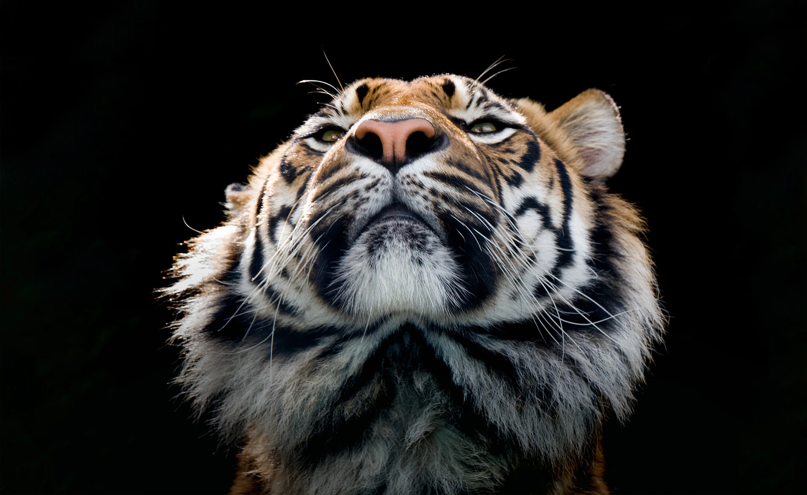

As our modern society gets more resource-intensive, natural spaces are shrinking and wildlife numbers are declining. Our 2022 Living Planet Report shows global wildlife populations have plummeted by 69% on average since 1970. While there have been amazing and inspirational wildlife successes and stories in the past, many animals are still endangered mostly due to unsustainable human-led activities. Currently, on the International Union for Conservation of Nature (IUCN) red list, more than 41,000 species have been assessed to be under threat of extinction.